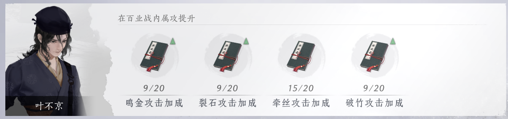
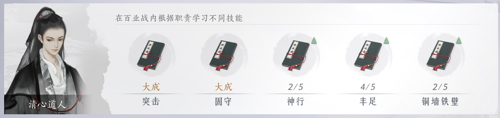
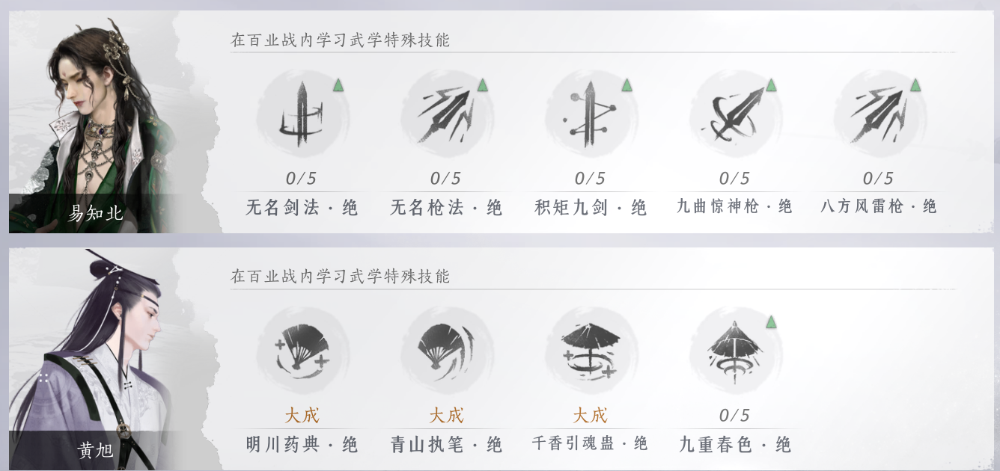
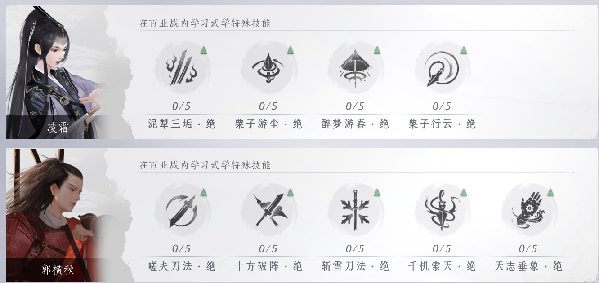
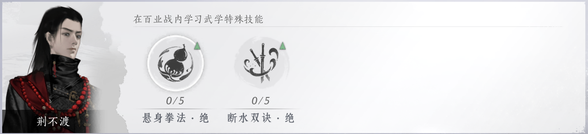
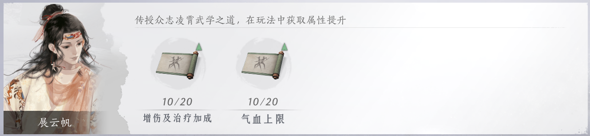

Guild Technique Perk Guide
Guild Technique is one of the main benefits of joining a guild. Its perks make combat and exploration easier in Where Winds Meet. You earn Wonder Jade mainly through guild activities, which reset weekly, and there’s no weekly cap on how much you can earn. Your accumulated Wonder Jade resets each season, but you’ll receive Wonder Jade by in-game mail based on how much you earned the previous season. The more you earn, the more you can unlock.
Unsure how to spend the Wonder Jade you’ve earned? Use the recommendations below to decide what to upgrade first.
Guild War Skills
Prioritize the skills below and raise them to at least level 5, even if you don’t participate in Guild War. They give the whole guild a Guild War bonus through Guild Synergy:
Base damage, damage reduction, and max HP bonuses. If you participate in Guild War, max these out first. Even if you don’t participate, try to max them out.

Attribute Attack bonuses. If you participate in Guild War, max out the bonuses for your martial arts style first, then ask your guild’s shot caller what to upgrade next. If you don’t participate, try to raise each bonus to at least level 5.

Unlock the skills that match your assigned position in Guild War:

You can skip this section if you don’t participate in Guild War. If you do, try to max out the special techniques for your martial arts style:



Wealth Through Trade
Use these recommendations if you want to earn Commerce Coin by trading at the Trade Commission in Kaifeng:
Max out Sale Price Bonus and Tax Reduction. Both perks apply only when you sell goods in a guild member’s world. Sales in other players’ worlds use the standard price and tax rate.

Level 10 is enough for your market bag capacity. Rent the largest house in Kaifeng for 60 slots to cover your needs.

Jianghu Exploration
Skyward Bond (guild tower climbing): Max this out first if you take part in tower climbing. Otherwise, you can skip it.

Adventure Slip bonus: If you usually play solo and need more Adventure Slips for purchases at the Wandering Paths Shop, unlock this bonus.
You can usually skip the gear repair perk unless your gear wears out especially quickly.

Other Perks
Upgrade other Guild Techniques as needed for the activities you play.